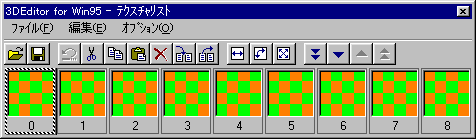
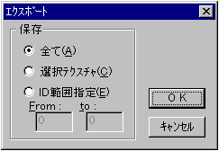
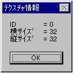
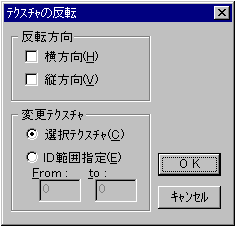
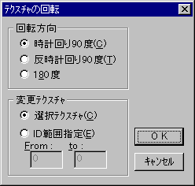
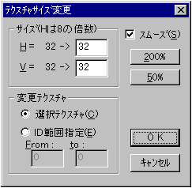
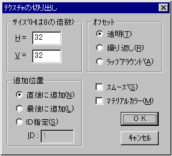

★Graphic Tools Guide
★3D Editorユーザーズマニュアル
★Graphic Tools Guide
★3D Editorユーザーズマニュアル
▲
戻る｜
進む▼
3D Editorユーザーズマニュアル/ウィンドウ
■テクスチャウィンドウ
- メインウインドウで「表示」→「テクスチャリスト」を選択した際に表示されるウインドウについての説明です。

-
■「ファイル」メニュー
- テクスチャファイルの入出力等のファイル管理を行います。
- ◆開く
- 既に保存されているSGT形式のファイルを開きます。ファイルを既に開いている場合は、テクスチャデータは、ファイルに定義されている部分が自動的に上書きされます。
- ◆保存
- 現在作業中のファイルをSGT形式で保存します。
- ◆別名で保存
- 現在作業中のファイルに名前をつけて、別ファイルとして保存します。
- ◆１〜４
- 最近開いたり、保存したファイルから順番に４ファイルが表示されます。
- ◆インポート
- テクスチャの素材となる2Ｄ画像ファイルを開き、テクスチャウィンドウで現在選択されているテクスチャ番号の位置に、テクスチャデータとして登録します。既にテクスチャデータが存在していた場合、上書きされます。
- ◆エクスポート
- テクスチャデータをの2Ｄ画像ファイルに保存します。
- 【ダイアログボックス】

- 「保存」
テクスチャデータを保存する条件を選択します。
- 全て
登録されている全てのデータを保存します。
- 選択テクスチャ
現在選択されているテクスチャを保存します。
- ID範囲指定
保存するテクスチャデータの範囲を、テクスチャ番号で指定します。
■「編集」メニュー
- 切り取り・貼り付け等のテクスチャデータの編集を行います。また、テクスチャデータのサイズ等の情報も表示します。
- ◆元に戻す
- 直前の操作を取り消します。取り消しできない機能もあるので注意が必要です。
- ◆切り取り
- 選択されているテクスチャデータを切り取ります。切り取られたデータはクリップボードに保管されます。
- ◆コピー
- 選択されているテクスチャデータを複写します。複写されたデータはクリップボードに保管されます。
また、クリップボードデータは、DIBビットマップ形式で保管されているので、他のアプリケーションにデータを「貼り付け」ることも可能です。
- ◆貼り付け
- クリップボードに保管されたテクスチャデータを、現在選択されているテクスチャ番号の位置に貼り付けます。
また、 他のアプリケーションによって、DIBビットマップ形式で保管されたクリップボードデータを「貼り付け」ることも可能です。
- ◆削除
- 選択されているテクスチャデータを消去します。
- ◆全て削除
- 登録されている全てのテクスチャデータを消去します。
- ◆インサート
- 選択されているテクスチャ番号の位置にブランクテクスチャを挿入して並び替えます。
「Shift」キーを押しながら指定すると、既に適応されたテクスチャデータの関連を保ったまま、並び替えることができます。
- ◆バックスペース
- 選択されているテクスチャデータを削除し、以降の番号のテクスチャデータをつめて並び替えます。
「Shift」キーを押しながら指定すると、既に適応されたテクスチャデータの関連を保ったまま、並び替えることができます。
- ◆クリップボードのクリア
- クリップボードに保管されているデータを削除します。
- ◆テクスチャ情報
- 選択されているテクスチャデータの、サイズ等の情報を表示します。

■「オプション」メニュー
- テクスチャデータの方向や大きさを変えます。テクスチャ切り出し機能等の基本操作もここで行います。
- ◆反転
- 指定テクスチャを、中心線対称に反転させます。
- 【ダイアログボックス】

- 「反転方向」
反転させる方向を指定します。
- 横方向
横方向に反転します。
- 縦方向
縦方向に反転します。
- 「変更テクスチャ」
反転処理を行うテクスチャデータの範囲を指定します。
- 選択テクスチャ
現在選択されているテクスチャデータを反転します。
- ID範囲指定
反転するテクスチャデータの範囲を、テクスチャ番号で指定します。
- ◆回転
- 指定テクスチャを、回転させます。
- 【ダイアログボックス】

- 「回転方向」
回転させる方向を指定します。
- 時計回り90度
時計回りに90度回転します。
- 反時計回り90度
反時計回りに90度回転します。
- 180度
180度回転します。
- 「変更テクスチャ」
回転処理を行うテクスチャデータの範囲を指定します。
- 選択テクスチャ
現在選択されているテクスチャデータを回転します。
- ID範囲指定
回転するテクスチャデータの範囲を、テクスチャ番号で指定します。
- ◆サイズ変更
- 指定テクスチャのサイズを、変更します。
- 【ダイアログボックス】

- 「サイズ」
回転させる方向を指定します。
- Ｈ
変更後の横サイズを入力します。
- Ｖ
変更後の縦サイズを入力します
- 「変更テクスチャ」
サイズ変更を行うテクスチャデータの範囲を指定します。
- 選択テクスチャ
現在選択されているテクスチャデータのサイズを変更します。
- ID範囲指定
サイズを変更するテクスチャデータの範囲を、テクスチャ番号で指定します。
- 「スムーズ」
変更後のサイズが変更前よりも大きい場合、ジャギーが目立たないように処理します。
- 「２００％」
縦横サイズを２倍にします。
- 「５０％」
縦横サイズを０．５倍にします。
- ◆切り出しテクスチャ表示
- 現在選択されているテクスチャデータを、メインウィンドウ上に重ねて表示します。表示後のテクスチャは、「切り出しテクスチャ移動」ツールによって、メインウィンドウ上で自由に大きさや位置を変更することが可能になります。
- ◆テクスチャ切り出し
- 現在表示されている切り出し用テクスチャデータの、大きさや位置の情報を基に、選択されているポリゴンに対して、テクスチャデータの自動生成及び適用を行います。
- ◆送る
- ◆戻る
- ◆ページ送り
- ◆ページ戻り
- テクスチャリストを目的に応じ、スクロールします。
■テクスチャ切り出し機能
- テクスチャ切り出し機能は、切り出し用テクスチャデータの現在表示されている大きさや位置の情報を基準にして、選択ポリゴンに対して、視線方向への平行投影を行ないます。投影された各ポリゴンの頂点相対座標情報を基に、現在メインウィンドウに表示されているイメージを極力損なうことがないよう且つ、SegaSaturnでの変形スプライト処理が施されることを前提とした、最適化されたテクスチャデータの生成を行います。
新たに生成されたテクスチャデータは、対応した各ポリゴンに自動的に適用され、直ちにアトリビュート情報に結果が反映されます。
- 【ダイアログボックス】

- 「サイズ」
生成するテクスチャデータのサイズを指定します。
- Ｈ
テクスチャデータの横サイズを入力します。
- Ｖ
テクスチャデータの縦サイズを入力します。
- 「オフセット」
現在表示されている切り出しテクスチャデータの大きさを超えた部分の、処理方法を選択します。
- 透明
透明ピクセルで処理します。
- 繰り返し
切り出しテクスチャデータの端のデータを繰り返して処理します。
- ラップアラウンド
切り出しテクスチャデータを折り返して処理します。
- 「追加位置」
生成されたテクスチャデータを配置する先頭番号を指定します。切り出された複数のテクスチャデータは、ここで指定されたテクスチャ番号以降に、順次配置されます。既にテクスチャデータが存在する場合は、生成されたデータによって上書きされます。
- 直後に追加
選択されているテクスチャ番号の直後から配置します。
- 最後に追加
登録されているテクスチャデータの最後に追加して配置します。
- ID指定
入力されたテクスチャ番号から配置します。
- 「スムーズ」
切り出されたテクスチャデータの、ジャギーが目立たないように処理します。
- 「マテリアルカラー」
切り出されたテクスチャデータの透明ピクセル部分に、各面毎に設定されているポリゴン色を使用して処理します。
▲
戻る｜
進む▼
★Graphic Tools Guide
★3D Editorユーザーズマニュアル
Copyright SEGA ENTERPRISES, LTD,. 1997